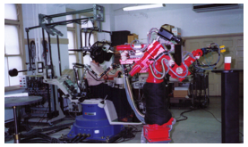
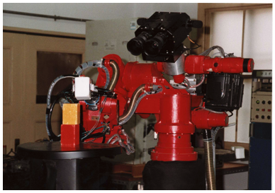
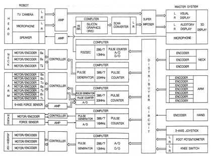

TELESAR I
First working telexistence system — a head-coupled stereoscopic telepresence rig that produced a genuine out-of-body sensation in every operator who tried it

Overview
TELESAR (TELExistence Surrogate Anthropomorphic Robot) I was the world's first working telexistence system, developed by Susumu Tachi at the Mechanical Engineering Laboratory in Tsukuba, Japan. The concept was conceived by Tachi on September 19, 1980; he filed Japanese patents in December 1980 and January 1981. A visual-only prototype was operational by late 1981; the full anthropomorphic master-slave system by 1983–1984.
The operator wore a stereo head-mounted display (two 6-inch LCDs at 720×240 pixels) carried by a counterbalanced 6-DOF link mechanism that tracked head movements in real time within a 1.6 m × 0.6 m × 0.6 m workspace. A parallel-link master arm with 10 DOF (7 for the arm, 3 for body compliance) captured arm and hand movements. On the remote side, an anthropomorphic slave robot (60 kg, 7-DOF arm, stereo CCD cameras on a 3-DOF neck, binaural microphones, gripper hand with force sensor) replicated the operator's movements. Four Intel 286/386 computers processed the control loops at 10 ms. The critical interaction design principle: the stereo cameras were positioned exactly where a human's eyes would be on the robot, and the slave arm was positioned so the operator saw it in the HMD exactly where their proprioception expected their own arm to appear.
When Tachi first tested the visual-only display in late 1981, he reported an out-of-body experience (yūtai ridatsu) — he could observe his real self raising and lowering hands from the robot's perspective, in real time. Grant Fjermedal (The Tomorrow Makers, 1986) and Howard Rheingold (Virtual Reality, 1991) independently confirmed the same sensation. The system was funded through Japan's eight-year national 'Advanced Robot Technology in Hazardous Environments' project (1983–1990).
Deep dive
Susumu Tachi (born 1946) studied mathematical engineering and information physics at the University of Tokyo. After hearing a radio broadcast of Norbert Wiener's The Human Use of Human Beings in 1965, he devoted himself to cybernetics research. From 1975 he worked at the Mechanical Engineering Laboratory (MEL) in Tsukuba Science City, under Japan's Ministry of International Trade and Industry (MITI). He spent 1979–1980 as a visiting scientist at MIT. On the morning of September 19, 1980, walking down a laboratory hallway at MEL shortly after returning from MIT, he had an epiphany: if technology could continuously present a remote person with the identical retinal images they would receive from direct vision, they could essentially 'exist' across space and time. He filed two foundational Japanese patents: 'Evaluation Device for Mobility Aids for the Blind' (filed Dec 26, 1980, patent 1462696) and 'Operation Method of Manipulators with Sensory Information Display Functions' (filed Jan 14, 1981, patent 1458263). The first English-language paper appeared in 1984 at the RoManSy symposium.
The master system consisted of a head-coupled stereo display (two 6-inch monochrome LCDs at 720×240 pixels with convex lenses and mirrors), a 10-DOF master arm, and a counterbalanced 6-DOF link mechanism for head tracking. The slave robot was anthropomorphic: 60 kg, 7-DOF right arm with a 6-axis wrist force sensor, 3-DOF neck carrying two color CCD cameras (420,000 pixels each, f=12mm, 40° field of view) and two binaural microphones spaced 243mm apart (matching the master display's ear spacing), a 1-DOF waist twist, and a gripper hand (1-DOF pinch/grasp) weighing 620 g with a DC motor, ball screw, parallel-link mechanism, and strain gauge force sensing. Locomotion was provided by a planar polar-coordinate mechanism (500–1500mm radial, 270° angular). Four Intel 286/386 computers ran MS-DOS with C-language control programs totaling 11572 + 76983 + 22611 + 86375 bytes. The control cycle was 10 ms.
The operator sees the remote environment through the robot's eyes; when the operator turns their head, the robot's neck turns correspondingly, changing the camera view in real time. When the operator's hand moves, the robot's arm moves identically. Crucially, the slave arm appears in the operator's HMD at the exact spatial position where the operator's proprioception expects their own arm to be — creating a seamless sensorimotor loop. Tachi called this a 'virtual exoskeleton' — the operator is not wearing the robot body physically (as in GE's Hardiman, 1967) but experiences the same embodiment effect without the physical danger. This was a conceptual Aufhebung (sublation) of two contradictory paradigms: the dangerous physical exoskeleton and the disembodied autonomous supervised robot.
The term 'telexistence' was Tachi's independent coinage (1980), nearly simultaneous with Marvin Minsky's 'telepresence' (OMNI magazine, June 1980). The concepts differ in three ways: (1) telepresence does not include virtual environments — telexistence explicitly includes both real remote environments AND computer-generated virtual environments; (2) telepresence is an extension of teleoperation, while telexistence is a dialectical synthesis of exoskeleton and autonomous robot paradigms; (3) telexistence robots (avatars) are intelligent autonomous robots that can also be human-controlled, while telepresence robots are slave devices with no autonomy. Tachi founded the first international VR conference (ICAT, 1991), the Virtual Reality Society of Japan (1996), and later Telexistence Inc. (2017), which deployed avatar robots in Lawson convenience stores in 2020.
Tachi conducted rigorous human-factors experiments in 1989–1990 comparing five display conditions: (1) direct observation (control), (2) binocular HMD with head tracking, (3) monocular HMD with head tracking, (4) fixed CRT at 45° FOV, and (5) offset CRT at 30°. Operators performed a pursuit tracking task following a pseudorandomly moving target with the slave manipulator. Results showed clear superiority of the binocular head-tracked HMD over all CRT conditions, with significantly higher crossover frequency (fc) and lower effective time delay (Te). The binocular HMD approached direct-observation performance. The results were published in Presence journal (1994) and established the quantitative basis for head-coupled stereo displays in teleoperation.
TELESAR I proved the core hypothesis: tight visuomotor coupling between human and machine creates genuine presence. The TELESAR series continued through TELESAR VI (2020, 67-DOF full-body avatar with 10-finger haptic feedback including force, vibration, and temperature). Tachi's 30-year-cycle conjecture predicts a major societal shift toward telexistence in the 2050s. The Japanese government's Moonshot R&D program (2020, ¥115 billion) made 'cybernetic avatar society' its first of six goals — directly tracing to Tachi's work.
Team & pioneers
- Susumu Tachi. Inventor of telexistence (1980). Professor emeritus at University of Tokyo, founding president of Virtual Reality Society of Japan, founding chairman of Telexistence Inc. Earlier work includes MELDOG guide dog robot (1976–1983) and later work includes optical camouflage (2003).
- Kazuo Tanie. Co-inventor on foundational patents; contributed to mechanical design of slave robot.
- Kiyoshi Komoriya. Co-inventor on foundational patents; contributed to control system architecture.
- Hirohiko Arai. Contributed to later TELESAR development, co-author on 1985–1991 publications including the mobile telexistence system.
- Mechanical Engineering Laboratory (MEL). Japanese national laboratory in Tsukuba Science City, under the Ministry of International Trade and Industry (MITI). Home of the TELESAR project and the earlier MELDOG guide dog robot (1976–1983).
Media


Sources
- Susumu Tachi Wikipedia
- Tachi Lab: Telexistence overview
- Tachi Lab: TELESAR project page
- Tachi et al., 'Tele-existence (I): Design and Evaluation of a Visual Display with Sensation of Presence,' RoManSy 1984
- Tachi and Yasuda, 'Evaluation Experiments of a Telexistence Manipulation System,' Presence, Vol.3, No.1, pp.35–44, 1994
- Telepresence Wikipedia (covers telexistence history)
- Howard Rheingold, Virtual Reality, Touchstone, 1991 (describes out-of-body experience testing TELESAR)
- Grant Fjermedal, The Tomorrow Makers, Macmillan, 1986 (documents out-of-body experience at Tachi's lab)
- Tachi Lab: 'The Hour I First Invented Telexistence'